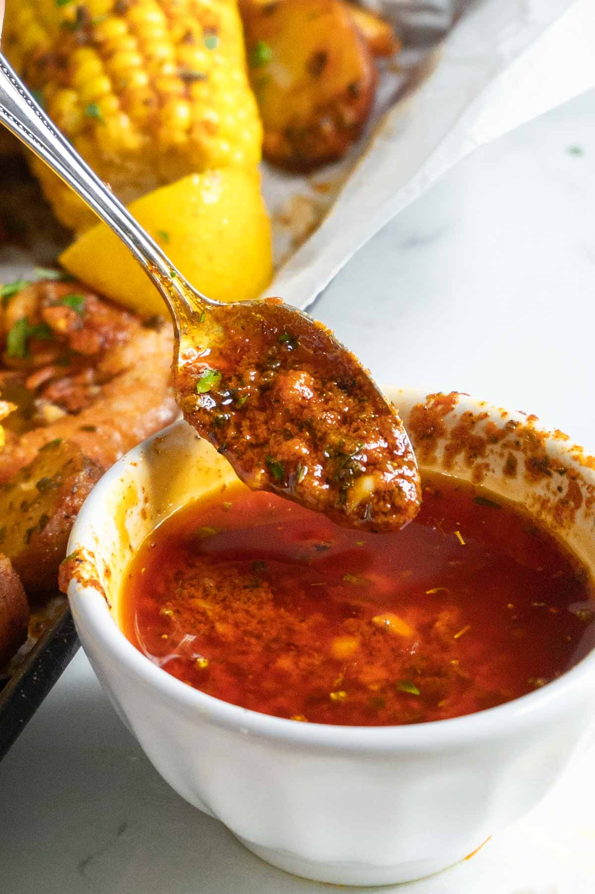

Cajun Butter Sauce

Description
A quick recipe for a cajun butter sauce. Sauce can be used to cook shrimp or other seafood. Spices combination goes well in cajun pastas.
Notes
- If using to cook seafood, double or triple recipe
- I recommend playing around with the ratios of spices to find one best suitable to your taste
Ingredients
- 8 tbsp butter
- 5 cloves of garlic, minced
- 1 tsp smoked paprika
- 1/2 tsp cayenne pepper
- 1/2 tsp dried parsley
- 1/2 tsp coarse salt
- 1/2 tsp ground black pepper
- 1/2 tsp garlic powder
- 1/2 tsp meat magic seasoning
- Desired amount of Franks Red Hot
- Desired amount of chopped green onions
- Shrimp (optional)
Instructions
- Heat butter in shallow pan until melted
- Add the spices and other ingredients to pan
- Bring butter to a simmer and then sauce is ready to use
Shrimp Instructions
- If cooking shrimp, wait until butter bubbles before adding
- Cook until shrimp are translucent and C shaped
- Serve with garlic bread
Home